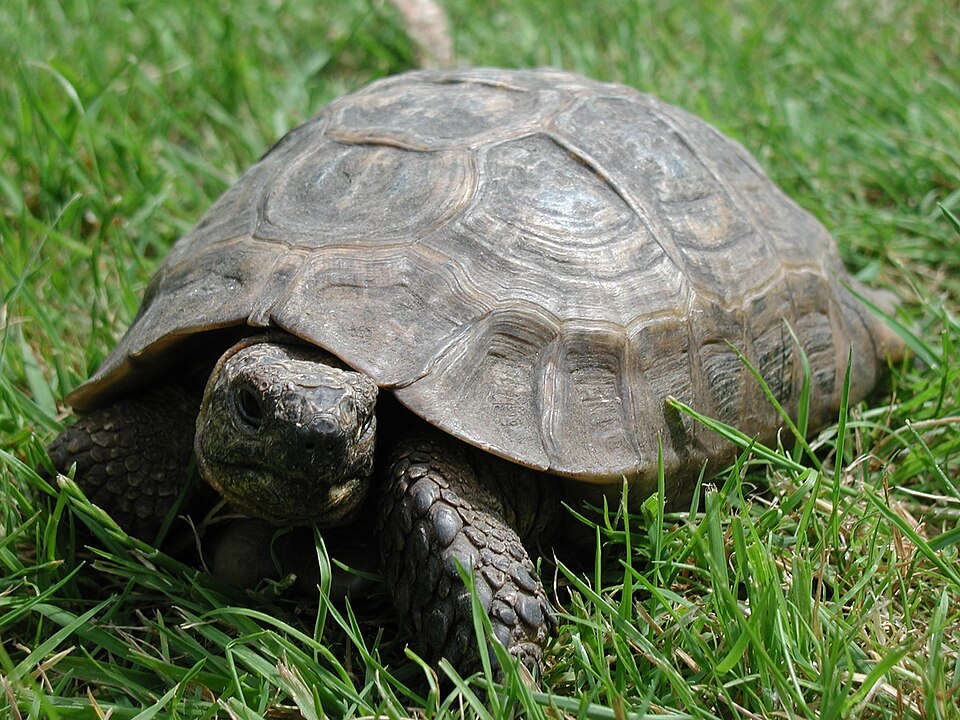

Project One
A focused project space for sharing research, design, writing, or engineering work with enough context for visitors to understand the outcome.
Personal website
A simple home for selected work, background, and contact details, built around thoughtful projects and clear communication.

About
I care about making ideas easier to understand and systems easier to use. My work brings together practical problem solving, careful writing, and a steady attention to detail.
Selected work
A focused project space for sharing research, design, writing, or engineering work with enough context for visitors to understand the outcome.
A place to highlight collaboration, process, and the decisions that shaped a useful result.
Current interests include clearer tools, better documentation, and work that helps people move from questions to confident action.
CV
A PDF version of the CV is available for a concise overview of experience, education, and selected work.
Contact
The best way to keep this section useful is to add a preferred email address, GitHub profile, LinkedIn page, or portfolio archive.